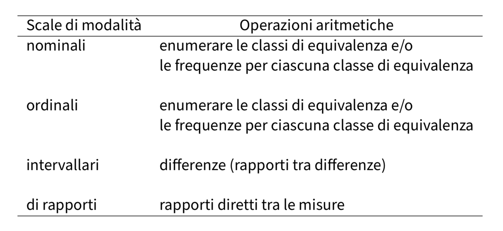

La misurazione in psicologia#
Measurement, measurement, measurement. It’s central to statistics. It’s central to how we learn about the world. (A. Gelman)
In questo capitolo verranno introdotte alcune nozioni di base relative ai temi della misurazione quantitativa delle caratteristiche psicologiche. Verrà presentata la teoria delle scale di misura di , ma prima di procedere, è indispensabile leggere l’appendice Numeri binari, interi, razionali, irrazionali e reali.
Obiettivi di apprendimento
Dopo la lettura di questo capitolo, si prevede che gli studenti saranno in grado di:
Conoscere le proprietà delle scale di misura di Stevens.
Comprendere quali operazioni aritmetiche possono essere applicate a ciascun livello di scala e perché.
Distinguere tra variabili continue e discrete.
Capire la differenza tra accuratezza e attendibilità.
Conoscere i diversi tipi di validità e affidabilità.
Scaling psicologico#
Il problema dello scaling psicologico riguarda la trasformazione dei dati osservati in misure o punteggi che rappresentino accuratamente le caratteristiche psicologiche misurate. Quando conduciamo ricerche in psicologia, spesso vogliamo assegnare numeri ai comportamenti o alle risposte degli individui per analizzarli in modo oggettivo. Tuttavia, questa trasformazione è complessa e richiede attenzione a diverse considerazioni.
Scaling di Guttman#
Uno dei metodi di scaling più noti è il «Scaling di Guttman», utilizzato per rappresentare relazioni ordinate tra elementi di una scala. Per esempio, in un questionario sui sintomi di ansia, le domande sono ordinate per intensità crescente. Se un partecipante risponde «sì» a una domanda più intensa, dovrebbe aver risposto «sì» anche a tutte le domande meno intense precedenti, creando una scala ordinata di gravità dei sintomi.
Scaling Thurstoniano#
Lo «Scaling Thurstoniano» misura le preferenze o i giudizi soggettivi. Ad esempio, per valutare la preferenza per diversi tipi di cibi, i partecipanti confrontano due cibi alla volta e esprimono una preferenza. Queste risposte vengono usate per assegnare punteggi basati sulla preferenza media.
Questionari Likert#
I questionari Likert richiedono ai partecipanti di esprimere il grado di accordo con affermazioni su una scala a più livelli (da «fortemente in disaccordo» a «fortemente d’accordo»). I punteggi ottenuti vengono sommati per rappresentare la posizione dell’individuo rispetto all’oggetto di studio.
Metodi di Valutazione delle Scale Psicologiche#
Per valutare le proprietà delle scale psicologiche, si utilizzano vari metodi. Ad esempio, l’affidabilità delle misure può essere analizzata con il coefficiente alpha di Cronbach o il coefficiente Omega di McDonald, che misurano la coerenza interna delle risposte ai vari item del questionario. Inoltre, la validità delle scale può essere esaminata confrontando i risultati con misure simili o utilizzando analisi statistiche per verificare se la scala cattura accuratamente il costrutto che si intende misurare. La validità di costrutto è cruciale, poiché riguarda la capacità della scala di misurare effettivamente il concetto psicologico che si intende esaminare.
Prospettive Moderne#
Negli ultimi anni, il dibattito sulla misurazione psicologica si è arricchito di nuove prospettive, grazie all’avvento di tecnologie avanzate e all’integrazione di approcci interdisciplinari. Ecco alcune delle tendenze più rilevanti:
Teoria della Risposta agli Item (IRT)#
La Teoria della Risposta agli Item (IRT) ha guadagnato popolarità per la sua capacità di fornire stime più precise delle abilità latenti rispetto ai modelli classici. La IRT considera la probabilità che un individuo risponda correttamente a un item in funzione della sua abilità e delle caratteristiche dell’item stesso, offrendo una visione più dettagliata delle proprietà psicometriche degli strumenti di misurazione.
Approcci Bayesiani#
Gli approcci bayesiani stanno rivoluzionando il campo della psicometria, permettendo di incorporare informazioni a priori nelle stime e di aggiornare le credenze sulla base di nuovi dati. Questi metodi sono particolarmente utili per affrontare la complessità e l’incertezza inerenti alla misurazione psicologica.
Analisi di Rete#
L’analisi di rete è un’altra metodologia emergente che vede i costrutti psicologici non come variabili latenti indipendenti, ma come reti di sintomi interconnessi. Questo approccio può offrire nuove intuizioni sulla struttura delle psicopatologie e sulla dinamica dei sintomi.
Le scale di misurazione#
Le scale di misurazione sono strumenti fondamentali per assegnare numeri ai dati osservati, rappresentando le proprietà psicologiche. La teoria delle scale di Stevens [] identifica quattro tipi di scale di misurazione: nominali, ordinali, a intervalli e di rapporti. Ognuna di queste scale consente di effettuare operazioni aritmetiche diverse, poiché ciascuna di esse è in grado di «catturare» solo alcune delle proprietà dei fenomeni psicologici che si intende misurare.
{kind=link}
Scala nominale#
ILa scala nominale è il livello di misurazione più semplice e corrisponde ad una tassonomia o classificazione delle categorie che utilizziamo per descrivere i fenomeni psicologici. I simboli o numeri che costituiscono questa scala rappresentano i nomi delle categorie e non hanno alcun valore numerico intrinseco. Con la scala nominale possiamo solo distinguere se una caratteristica psicologica è uguale o diversa da un’altra.
I dati raccolti con la scala nominale sono suddivisi in categorie qualitative e mutuamente esclusive, in cui ogni dato appartiene ad una sola categoria. In questa scala, esiste solo la relazione di equivalenza tra le misure delle unità di studio: gli elementi del campione appartenenti a classi diverse sono differenti, mentre tutti quelli della stessa classe sono tra loro equivalenti.
L’unica operazione algebrica consentita dalla scala nominale è quella di contare le unità di studio che appartengono ad ogni categoria e il numero totale di categorie. Di conseguenza, la descrizione dei dati avviene tramite le frequenze assolute e le frequenze relative.
Dalla scala nominale è possibile costruire altre scale nominali equivalenti alla prima, trasformando i valori della scala di partenza in modo tale da cambiare i nomi delle categorie, ma lasciando inalterata la suddivisione delle unità di studio nelle medesime classi di equivalenza. In altre parole, cambiando i nomi delle categorie di una variabile misurata su scala nominale, si ottiene una nuova variabile esattamente equivalente alla prima.
Scala ordinale#
La scala ordinale mantiene la caratteristica della scala nominale di classificare ogni unità di misura all’interno di una singola categoria, ma introduce la relazione di ordinamento tra le categorie. In quanto basata su una relazione di ordine, una scala ordinale descrive solo il rango di ordine tra le categorie e non fornisce informazioni sulla distanza tra di esse. Non ci dice, ad esempio, se la distanza tra le categorie \(a\) e \(b\) è uguale, maggiore o minore della distanza tra le categorie \(b\) e \(c\).
Un esempio classico di scala ordinale è quello della scala Mohs per la determinazione della durezza dei minerali. Per stabilire la durezza dei minerali si usa il criterio empirico della scalfittura. Vengono stabiliti livelli di durezza crescente da 1 a 10 con riferimento a dieci minerali: talco, gesso, calcite, fluorite, apatite, ortoclasio, quarzo, topazio, corindone e diamante. Un minerale appartenente ad uno di questi livelli se scalfisce quello di livello inferiore ed è scalfito da quello di livello superiore.
{kind=link}
Fig. 1 La scala di durezza dei minerali di Mohs. Un oggetto è considerato più duro di X se graffia X. Sono incluse anche misure di durezza relativa utilizzando uno sclerometro, da cui emerge la non linearità della scala di Mohs (Burchard, 2004).#
Scala ad intervalli#
La scala ad intervalli di misurazione include le proprietà della scala nominale e della scala ordinale e permette di misurare le distanze tra le coppie di unità statistiche in termini di un intervallo costante, chiamato «unità di misura», a cui viene attribuito il valore «1». L’origine della scala, ovvero il punto zero, è scelta arbitrariamente e non indica l’assenza della proprietà che si sta misurando. Ciò significa che la scala ad intervalli consente anche valori negativi e lo zero non viene attribuito all’unità statistica in cui la proprietà risulta assente.
La scala ad intervalli equivalenti consente l’esecuzione di operazioni algebriche basate sulla differenza tra i numeri associati ai diversi punti della scala, operazioni algebriche non possibili con le scale di misura nominale o ordinale. Tuttavia, il limite della scala ad intervalli è che non consente di calcolare il rapporto tra coppie di misure. È possibile affermare la differenza tra \(a\) e \(b\) come la metà della differenza tra \(c\) e \(d\) o che le due differenze sono uguali, ma non è possibile affermare che \(a\) abbia una proprietà misurata in quantità doppia rispetto a \(b\). In altre parole, non è possibile stabilire rapporti diretti tra le misure ottenute. Solo le differenze tra le modalità permettono tutte le operazioni aritmetiche, come la somma, l’elevazione a potenza o la divisione, che sono alla base della statistica inferenziale.
Nelle scale ad intervalli equivalenti, l’unità di misura è arbitraria e può essere cambiata attraverso una dilatazione, ovvero la moltiplicazione di tutti i valori della scala per una costante positiva. Inoltre, la traslazione, ovvero l’aggiunta di una costante a tutti i valori della scala, è ammessa poiché non altera le differenze tra i valori della scala. La scala rimane invariata rispetto a traslazioni e dilatazioni e dunque le uniche trasformazioni ammissibili sono le trasformazioni lineari:
Infatti, l’uguaglianza dei rapporti fra gli intervalli rimane invariata a seguito di una trasformazione lineare.
Esempio di scala ad intervalli è la temperatura misurata in gradi Celsius o Fahrenheit, ma non Kelvin. Come per la scala nominale, è possibile stabilire se due modalità sono uguali o diverse: 30\(^\circ\)C \(\neq\) 20\(^\circ\)C. Come per la scala ordinale è possibile mettere due modalità in una relazione d’ordine: 30\(^\circ\)C \(>\) 20\(^\circ\)C. In aggiunta ai casi precedenti, però, è possibile definire una unità di misura per cui è possibile dire che tra 30\(^\circ\)C e 20\(^\circ\)C c’è una differenza di 30\(^\circ\) - 20\(^\circ\) = 10\(^\circ\)C. I valori di temperatura, oltre a poter essere ordinati secondo l’intensità del fenomeno, godono della proprietà che le differenze tra loro sono direttamente confrontabili e quantificabili.
Il limite della scala ad intervalli è quello di non consentire il calcolo del rapporto tra coppie di misure. Ad esempio, una temperatura di 80\(^\circ\)C non è il doppio di una di 40\(^\circ\)C. Se infatti esprimiamo le stesse temperature nei termini della scala Fahrenheit, allora i due valori non saranno in rapporto di 1 a 2 tra loro. Infatti, 20\(^\circ\)C = 68\(^\circ\)F e 40\(^\circ\)C = 104\(^\circ\)F. Questo significa che la relazione «il doppio di» che avevamo individuato in precedenza si applicava ai numeri della scala centigrada, ma non alla proprietà misurata (cioè la temperatura). La decisione di che scala usare (Centigrada vs. Fahrenheit) è arbitraria. Ma questa arbitrarietà non deve influenzare le inferenze che traiamo dai dati. Queste inferenze, infatti, devono dirci qualcosa a proposito della realtà empirica e non possono in nessun modo essere condizionate dalle nostre scelte arbitrarie che ci portano a scegliere la scala Centigrada piuttosto che quella Fahrenheit.
Consideriamo ora l’aspetto invariante di una trasformazione lineare, ovvero l’uguaglianza dei rapporti fra intervalli. Prendiamo in esame, ad esempio, tre temperature: \(20^\circ C = 68^\circ F\), \(15^\circ C = 59^\circ F\), \(10^\circ C = 50 ^\circ F\).
È facile rendersi conto del fatto che i rapporti fra intervalli restano costanti indipendentemente dall’unità di misura che è stata scelta:
Scala di rapporti#
Nella scala a rapporti equivalenti, lo zero non è arbitrario e rappresenta l’elemento che ha intensità nulla rispetto alla proprietà misurata. Per costruire questa scala, si associa il numero 0 all’elemento con intensità nulla e si sceglie un’unità di misura \(u\). Ad ogni elemento si assegna un numero \(a\) definito come \(a=d/u\), dove \(d\) rappresenta la distanza dall’origine. In questo modo, i numeri assegnati riflettono le differenze e i rapporti tra le intensità della proprietà misurata.
In questa scala, è possibile effettuare operazioni aritmetiche non solo sulle differenze tra i valori della scala, ma anche sui valori stessi della scala. L’unica scelta arbitraria è l’unità di misura, ma lo zero deve sempre rappresentare l’intensità nulla della proprietà considerata.
Le trasformazioni ammissibili in questa scala sono chiamate trasformazioni di similarità e sono del tipo \(y' = by\), dove \(b>0\). In questa scala, i rapporti tra i valori rimangono invariati dopo le trasformazioni. In altre parole, se rapportiamo due valori originali e due valori trasformati, il rapporto rimane lo stesso: \(\frac{y_i}{y_j} = \frac{y'_i}{y'_j}\).
Gerarchia dei livelli delle scale di misurazione#
Secondo , esiste una gerarchia dei livelli delle scale di misurazione, denominati «livelli di scala». Questi livelli sono organizzati in modo gerarchico, in cui la scala nominale rappresenta il livello più basso della misurazione, mentre la scala a rapporti equivalenti rappresenta il livello più alto.
La scala nominale è il livello più elementare, in cui le categorie o le etichette vengono assegnate agli oggetti o agli individui senza alcuna valutazione di grandezza o ordine.
Al livello successivo si trova la scala ordinale, in cui le categorie sono ordinate in base a una qualche qualità o caratteristica. Qui, è possibile stabilire un ordine di preferenza o gerarchia tra le categorie, ma non è possibile quantificare la differenza tra di esse in modo preciso.
La scala intervallo rappresenta un livello successivo, in cui le categorie sono ordinate e la differenza tra di esse è quantificabile in modo preciso. In questa scala, è possibile effettuare operazioni matematiche come l’addizione e la sottrazione tra i valori, ma non è possibile stabilire un vero e proprio punto zero significativo.
Infine, la scala a rapporti equivalenti rappresenta il livello più alto. In questa scala, le categorie sono ordinate, la differenza tra di esse è quantificabile in modo preciso e esiste un punto zero assoluto che rappresenta l’assenza totale della grandezza misurata. Questo livello di scala permette di effettuare tutte le operazioni matematiche, compresa la moltiplicazione e la divisione.
Passando da un livello di misurazione ad uno più alto aumenta il numero di operazioni aritmetiche che possono essere compiute sui valori della scala, come indicato nella figura seguente.

Per ciò che riguarda le trasformazioni ammissibili, più il livello di scala è basso, più le funzioni sono generali (sono minori cioè i vincoli per passare da una rappresentazione numerica ad un’altra equivalente). Salendo la gerarchia, la natura delle funzioni di trasformazione si fa più restrittiva.
Variabili discrete o continue#
Le variabili possono essere classificate come variabili a livello di intervalli o di rapporti e possono essere sia discrete che continue.
Le variabili discrete assumono valori specifici ma non possono assumere valori intermedi. Una volta che l’elenco dei valori accettabili è stato definito, non vi sono casi che si trovano tra questi valori. In genere, le variabili discrete assumono valori interi, come il numero di eventi, il numero di persone o il numero di oggetti.
D’altra parte, le variabili continue possono assumere qualsiasi valore all’interno di un intervallo specificato. Teoricamente, ciò significa che è possibile utilizzare frazioni e decimali per ottenere qualsiasi grado di precisione.

Comprendere gli errori nella misurazione#
Gli errori di misurazione possono essere casuali o sistematici. Gli errori casuali sono fluttuazioni aleatorie, mentre gli errori sistematici sono costanti e derivano da problemi nel metodo di misurazione o negli strumenti.
Precisione e Accuratezza#
La precisione indica la coerenza tra misurazioni ripetute, mentre l’accuratezza si riferisce alla vicinanza del valore misurato al valore reale. Entrambi i concetti sono cruciali per l’assessment psicometrico.
Utilizzando l’analogia del tiro al bersaglio, si può avere una serie di colpi vicini tra loro ma lontani dal centro (precisione senza accuratezza) oppure colpi distribuiti in modo sparso ma in media vicini al centro (accuratezza senza precisione).
Assessment psicometrico#
L’assessment psicometrico valuta la qualità delle misurazioni psicologiche, considerando la validità e l’affidabilità.
Validità nella Misurazione Psicologica#
La validità è una proprietà psicometrica fondamentale dei test psicologici. Secondo gli Standards for Educational and Psychological Testing (2014), la validità si riferisce al grado in cui evidenza e teoria supportano le interpretazioni dei punteggi dei test per gli usi proposti. Questo concetto evidenzia che la validità riguarda sia il significato dei punteggi sia il loro utilizzo, rendendola “la considerazione più fondamentale nello sviluppo e nella valutazione dei test”.
Evoluzione del Concetto di Validità#
Tradizionalmente, la validità era suddivisa in tre categorie:
Validità di Contenuto: Si riferisce alla corrispondenza tra il contenuto degli item di un test e il dominio dell’attributo psicologico che il test intende misurare. È importante che gli item siano pertinenti e rappresentativi dell’attributo misurato.
Validità di Criterio: Valuta il grado di concordanza tra i risultati ottenuti tramite lo strumento di misurazione e i risultati ottenuti da altri strumenti che misurano lo stesso costrutto o da un criterio esterno. Include validità concorrente e predittiva.
Validità di Costrutto: Riguarda il grado in cui un test misura effettivamente il costrutto che si intende misurare. Si suddivide in validità convergente (accordo con strumenti che misurano lo stesso costrutto) e validità divergente (capacità di discriminare tra costrutti diversi).
La moderna teoria della validità non adotta più questa visione tripartita. Gli Standards del 2014 descrivono la validità come un concetto unitario, dove diverse forme di evidenza concorrono a supportare l’interpretazione dei punteggi del test per il loro utilizzo previsto.
Tipologie di Prove di Validità#
Gli Standards del 2014 identificano cinque categorie principali di prove di validità:
Prove Basate sul Contenuto del Test: Valutano quanto il contenuto del test rappresenti adeguatamente il dominio del costrutto da misurare.
Prove Basate sui Processi di Risposta: Analizzano se i processi cognitivi e comportamentali degli esaminandi riflettono il costrutto valutato.
Prove Basate sulla Struttura Interna: Esaminano la coerenza tra gli elementi del test e la struttura teorica del costrutto. L’analisi fattoriale è uno strumento chiave in questo contesto.
Prove Basate sulle Relazioni con Altre Variabili: Studiano la correlazione tra i punteggi del test e altre variabili teoricamente correlate, utilizzando metodi come la validità convergente e divergente.
Prove Basate sulle Conseguenze del Test: Considerano le implicazioni e gli effetti dell’uso del test, sia intenzionali che non intenzionali.
Minacce alla Validità#
La validità può essere compromessa quando un test non misura integralmente il costrutto di interesse (sotto-rappresentazione del costrutto) o quando include varianza estranea al costrutto. Inoltre, fattori esterni come l’ansia o la bassa motivazione degli esaminandi, e deviazioni nelle procedure di amministrazione e valutazione, possono influenzare negativamente la validità delle interpretazioni dei risultati.
Integrazione delle Prove di Validità#
La validità di un test si costruisce attraverso l’integrazione di diverse linee di evidenza. Ogni interpretazione o uso di un test deve essere validato specificamente, richiedendo una valutazione continua e accurata delle prove disponibili. Questo processo implica la costruzione di un argomento di validità che consideri attentamente la qualità tecnica del test e l’adeguatezza delle sue interpretazioni per gli scopi previsti.
In conclusione, la validità è un concetto complesso e integrato che richiede un’analisi continua e multidimensionale delle evidenze. La moderna teoria della validità enfatizza l’importanza di considerare diverse forme di evidenza per supportare le interpretazioni dei punteggi dei test, garantendo che siano utilizzati in modo appropriato e significativo. Gli sviluppatori e gli utilizzatori di test devono impegnarsi a valutare costantemente la validità per assicurare misurazioni psicologiche accurate e affidabili.
Affidabilità#
L’affidabilità concerne la consistenza e stabilità delle misurazioni, verificata attraverso metodi come l’affidabilità test-retest, inter-rater, intra-rater e l’affidabilità interna.
Affidabilità Test-Retest: Questa forma di affidabilità verifica la consistenza delle misurazioni nel tempo. Se un individuo viene testato in due momenti diversi, i risultati dovrebbero essere simili, assumendo che non ci siano stati cambiamenti significativi nel costrutto misurato.
Affidabilità Inter-rater: In questo caso, l’affidabilità è determinata dalla concordanza tra le valutazioni di diversi esaminatori. Ad esempio, se più psicologi dovessero valutare un individuo utilizzando lo stesso strumento, le loro valutazioni dovrebbero essere simili.
Affidabilità Intra-rater: Questa misura dell’affidabilità si riferisce alla consistenza delle valutazioni dello stesso esaminatore in momenti diversi.
Affidabilità Interna: Si riferisce alla coerenza delle risposte all’interno dello stesso test. Ad esempio, se un test misura un costrutto come l’ansia, gli item che misurano l’ansia dovrebbero correlare positivamente l’uno con l’altro. Un modo comune per valutare l’affidabilità interna è utilizzare il coefficiente \(\omega\) di McDonald.
Commenti e considerazioni finali#
La teoria della misurazione è fondamentale nella ricerca empirica per valutare l’attendibilità e la validità delle misurazioni. È cruciale valutare l’errore nella misurazione per garantire la precisione e l’accuratezza delle misure. L’assessment psicometrico si occupa di valutare la qualità delle misurazioni psicologiche, considerando l’affidabilità e la validità per garantire misure accurate dei costrutti teorici. Le moderne tecnologie e metodologie stanno continuamente arricchendo questo campo, offrendo strumenti sempre più raffinati per la comprensione delle caratteristiche psicologiche.